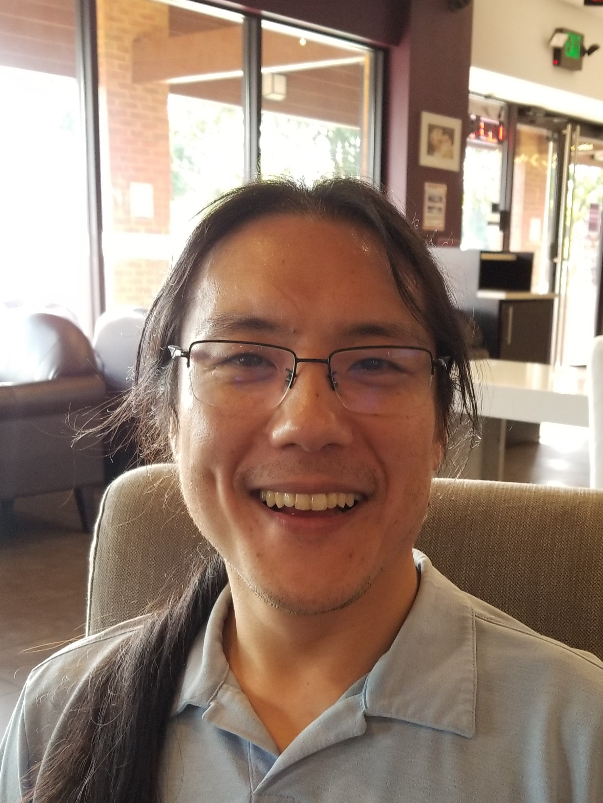

About Me
My name is Joseph Kim and and I am a glutton. If you have gone to any buffet around the Atlanta area, then we have probabbly crossed paths. As passionate as I am about food, I am even more hungry to learn new things and ravenous for change.
I have started my education at the University of Georgia and at the University of Hawaii at Manoa to learn Biology. When I came back to Georgia, Sago Networks hired me on as a Data Center Technician. From then on, I have furthered my pursuit in the Technology sector by learning Windows, Linux distrubutions, Networking, Bitmining, and Virtual Machines. With these skillsets, Virtual Citadel, and later Synergy Networks hired me on as a Data Center Operator/Network Operations Center Technician. Currently, I am a student at Georgia Institute of Technology Fullstack Coding Boot Camp so that I myself can be the Instrument of Change.
Connect with Me